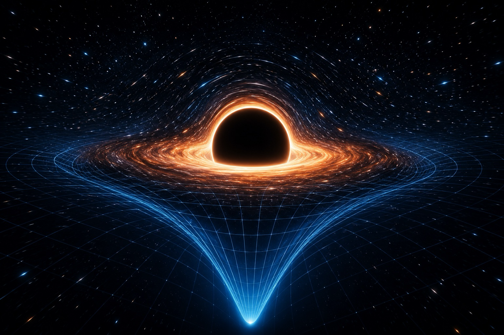

A BookBank Field Guide · The Cosmos
SpaceTime
Gravity, black holes, and why time itself
bends, stretches, and falls.

A breathtaking editorial illustration of a black hole at the center of a deep-indigo star field, its intense gravity bending a glowing blue grid of spacetime downward into a smooth funnel-shaped well, with a warm orange accretion disk of light circling the dark shadow and a thin bright photon ring hugging its edge. Distant stars streak subtly as their light lenses around the shadow. Luminous, awe-struck, cinematic; flat-vector-meets-astrophotography style; near-black background with a single glowing blue accent and warm gold disk. No text baked in. ~1200x800px, 3:2 landscape; keep the black hole centred with generous safe margins, it is letterboxed into a 3:2 box.
Generate with your image agent, then drop the file here.
In the voice of Richard Feynman.
“I think I can safely say that nobody understands gravity — so let’s find out how far we can get.”
The Journey
Where we’re going
Eight short chapters, each built from the last. We start with a falling apple and end at the edge of a black hole — and every strange thing in between turns out to follow from one idea. Play with every diagram; the universe is more fun when you push on it.
- What Is Gravity, Really?The falling elevator
- The Fabric of SpacetimeSpace + time = one thing
- Mass Bends the FabricCurvature & geodesics
- Time DilationMoving & deep clocks run slow
- Falling ForeverOrbits & Newton’s cannonball
- Black HolesEscape velocity meets light
- Falling Into a Black HoleFrozen light & tides
- The Universe This OpensWaves, wonders, mysteries
- CheatsheetEvery idea, one page